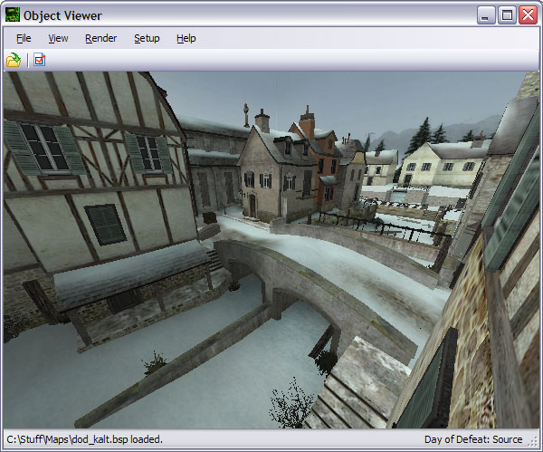
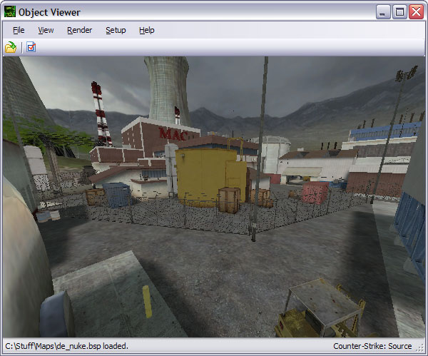
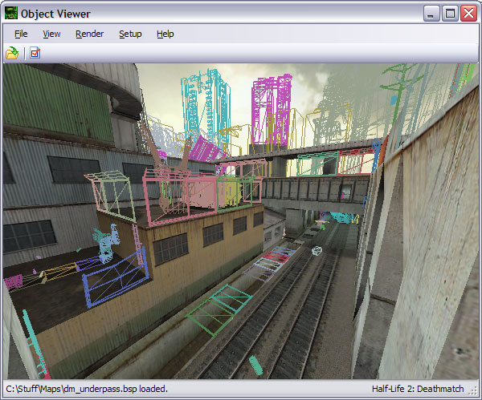
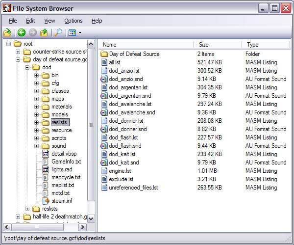
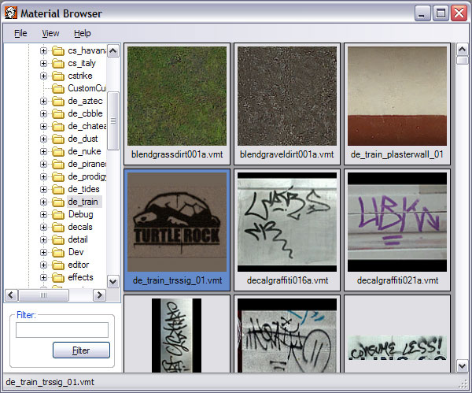
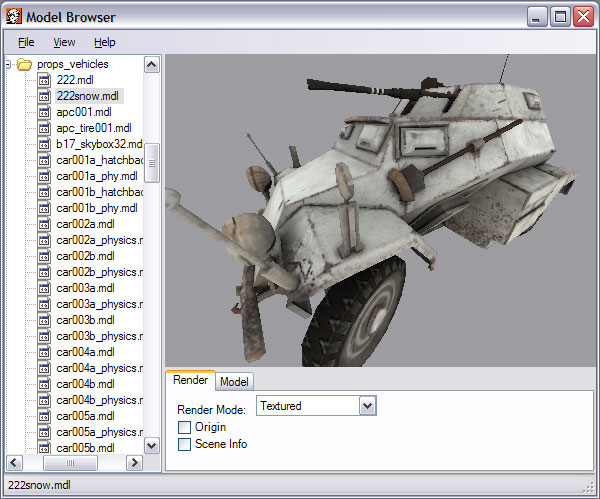

Crafty is a 3D object, material, model and file browsing utility targeted towards Half-Life modders or enthusiasts looking for a Steam Independent application for quick previews. It currently supports Half-Life 2 .bsp, .mdl, .vmf and .gl formats along with Half-Life .bsp, .mdl, .map and .rmf formats in a variety of render modes.
Screenshots:





- View Half-Life 2 .bsp, .gl, .mdl and .vmf files.
- View Half-Life 1 .bsp, .map, .mdl and .rmf files.
- View .obj and .skp files.
- Textured, solid, x-ray, wireframe and point render modes.
- Toggle occlusion, frustum and backface culling.
- Scene freezing.
- Export all formats and materials to .obj.
- Browse and export from GCF and other package formats.
- Browse and export materials.
- Browse and export models.
- Quick and easy setup.
- 100% free.
Crafty is designed foremost as an object viewer, but it also contains several useful features that can be invoked externally. For example, Crafty's File System Browser, Material Browser and Model Browser can all be invoked with special command arguments. To view one or more packages in File System Browser simply use: Crafty.exe -fsb -mount [package 1] -mount [package 2] ... . To view one or more packages in Material Browser simply use: Crafty.exe -msb -mount [package 1] -mount [package 2] ... . To view one or more packages in Model Browser simply use: Crafty.exe -mb -mount [package 1] -mount [package 2] ... . For example, if you wanted to view thumbnails of the materials in source materials.gcf you would use Crafty.exe -msb -mount "source materials.gcf". If you are familiar with Windows you can also add shortcuts to these features in the system context menu.
DownloadLikin' the tool, it's extremely useful and quite possibly my fav piece of technical engineering since sliced bread.
However, when I load cp_well(TF2) under the TF2 Profile, I load all the textures/gometry but not all of the models. Key models - such as the medicine cabinets and the trains - are missing. I was wondering if you could help me out?
I will eventually try to import it into 3DS, but maybe the models will appear in 3ds and it's just they'renot showing in Crafty. I dunno, so I'm asking you.
Andy
do you got any additional information about the structure and what the data inside is for? the hl sdk doesnt help me a lot with src code only with no comments.
btw. you can delete this comment from the bsp viewer faq, was posted in wrong window.
do you got any additional information about the structure and what the data inside is for? the hl sdk doesnt help me a lot with src code only with no comments.
btw. you can delete this comment from the bsp viewer faq, was posted in wrong window.
Half-Life 1 or Half-Life 2?
That's how they are stored in the .bsp.
In order to use the lightmaps, you will need to export to .obj twice using the following settings:
First export:
Material Type: Materials.
Textures enabled.
Models enabled.
Second Export:
Material Type: Lightmaps.
Textures enabled.
Models disabled.
You can enabled or disable Special Materials (just keep it the same for both exports) and use whatever Texture Extension you want. These settings can be found under the Exporting tab of the Options dialog.
Once you have the two .obj files, load them both up on top of each other in your modeler of choice, then set the lightmap material properties to a multiplicative blend.
Half-Life 1
You might want to check out the bsp_view source code; it's hard to offer much more than that for such a vague question.
I've tried it in 3D Studio Max. The method is more of a hack since .obj files do not support multi-texturing.
any help?
Tried loading the models into various programs with the same results.
The model itself is fine as I've been able to decompile some with cannon fodder's decompiler and loaded the smd files themselves into milkshape, but the decompiler is pretty twitchy and not nearly as reliable as crafty - plus i'd rather just export the files directly to obj if possible.
Thanx
Unhandled exception has occured in your application. If you click Continue, the application will ignore this error and attempt to continue. Iy you click Quit, the application will close immediately.
Object references not set to an instance of an object.
Details:
See the end of this message for details on invoking
just-in-time (JIT) debugging instead of this dialog box.
************** Exception Text **************
System.NullReferenceException: Object reference not set to an instance of an object.
at ?A0x8636a16d.IReaderSeekProc(Int32 iOffset, HLSeekMode eMode, Void* pUserData)
at HLLib.CPackage.Open(CPackage* , Void* , UInt32 )
at Crafty.Objects.CBSPObject.BuildBSPTextures(CBSPObject* )
at Crafty.Objects.CBSPObject.Read(CBSPObject* , IReader* Reader)
at Crafty.Engine.COVEngine.Load(COVEngine* , CString* FileName, IReader* Reader)
at Crafty.CObjectViewer.Open(String pFileName, IReader* Reader)
at Crafty.CObjectViewer.CObjectViewer_Shown(Object sender, EventArgs e)
at System.Windows.Forms.Form.OnShown(EventArgs e)
at System.Windows.Forms.Form.CallShownEvent()
at System.Windows.Forms.Control.InvokeMarshaledCallbackDo(ThreadMethodEntry tme)
at System.Windows.Forms.Control.InvokeMarshaledCallbackHelper(Object obj)
at System.Threading.ExecutionContext.runTryCode(Object userData)
at System.Runtime.CompilerServices.RuntimeHelpers.ExecuteCodeWithGuaranteedCleanup(TryCode code, CleanupCode backoutCode, Object userData)
at System.Threading.ExecutionContext.RunInternal(ExecutionContext executionContext, ContextCallback callback, Object state)
at System.Threading.ExecutionContext.Run(ExecutionContext executionContext, ContextCallback callback, Object state)
at System.Windows.Forms.Control.InvokeMarshaledCallback(ThreadMethodEntry tme)
at System.Windows.Forms.Control.InvokeMarshaledCallbacks()
************** Loaded Assemblies **************
mscorlib
Assembly Version: 2.0.0.0
Win32 Version: 2.0.50727.1433 (REDBITS.050727-1400)
CodeBase: file:///c:/WINDOWS/Microsoft.NET/Framework/v2.0.50727/mscorlib.dll
----------------------------------------
Crafty
Assembly Version: 1.0.3256.32313
Win32 Version: 1.0.0 Alpha 14
CodeBase: file:///C:/Program%20Files/Crafty/Crafty.exe
----------------------------------------
msvcm80
Assembly Version: 8.0.50727.1433
Win32 Version: 8.00.50727.1433
CodeBase: file:///C:/WINDOWS/WinSxS/x86_Microsoft.VC80.CRT_1fc8b3b9a1e18e3b_8.0.50727.1433_x-ww_5cf844d2/msvcm80.dll
----------------------------------------
System.Windows.Forms
Assembly Version: 2.0.0.0
Win32 Version: 2.0.50727.1433 (REDBITS.050727-1400)
CodeBase: file:///C:/WINDOWS/assembly/GAC_MSIL/System.Windows.Forms/2.0.0.0__b77a5c561934e089/System.Windows.Forms.dll
----------------------------------------
System
Assembly Version: 2.0.0.0
Win32 Version: 2.0.50727.1433 (REDBITS.050727-1400)
CodeBase: file:///C:/WINDOWS/assembly/GAC_MSIL/System/2.0.0.0__b77a5c561934e089/System.dll
----------------------------------------
System.Drawing
Assembly Version: 2.0.0.0
Win32 Version: 2.0.50727.1433 (REDBITS.050727-1400)
CodeBase: file:///C:/WINDOWS/assembly/GAC_MSIL/System.Drawing/2.0.0.0__b03f5f7f11d50a3a/System.Drawing.dll
----------------------------------------
************** JIT Debugging **************
To enable just-in-time (JIT) debugging, the .config file for this
application or computer (machine.config) must have the
jitDebugging value set in the system.windows.forms section.
The application must also be compiled with debugging
enabled.
For example:
<configuration>
<system.windows.forms jitDebugging="true" />
</configuration>
When JIT debugging is enabled, any unhandled exception
will be sent to the JIT debugger registered on the computer
rather than be handled by this dialog box.
Also, when I try to open a .wad I get told my Steam username has not been set in Crafty's options, but I can't find where I should set it.
You can set you Steam user name under the File System tab on Object Viewer's Options form (Setup menu).
Thanks for fixing it anyway.
Is there any chance of support for Half-Life PS2 map files?
this program is perfect..
is all that i need to test my game..
TKS TKS TKS
Feature request!: It would be super-mega hot if you could include functionality in Crafty to diff vmfs (or all objects?!). This would be crazy useful for content developers!
I've been trying to make a simple and painless way for Source mappers to be able to collaborate via SVN (or your favorite version control system), but the big hitch has been in handling version conflicts. I think that with diffing support Crafty would fill this nitch awesomely.
I'd love to talk to you about this, reach me at vmfdiff[AT}piratesofpacifca.invalid
(replace [AT], and .invalid should be .com)
Only slightly related: I'd love to help with the project, but I've only ever read C code. Let me know if there's any way I can help!
I however have an issue. I'm trying to export the L4D models into OBJ format, while the loading of the models and exportation are fine, I cannot for some reason open up the OBJ again. 3DS Max simple doesn't load the format, Crafty shows it as empty and 3D Object Converter says something about 'Invalid Format'.
I would like to know if it's something I'm doing (wrong) or the export option isn't finalized still?
Regards, Ace.
Feature request!: It would be super-mega hot if you could include functionality in Crafty to diff vmfs (or all objects?!). This would be crazy useful for content developers!
I've been trying to make a simple and painless way for Source mappers to be able to collaborate via SVN (or your favorite version control system), but the big hitch has been in handling version conflicts. I think that with diffing support Crafty would fill this nitch awesomely.
I'd love to talk to you about this, reach me at vmfdiff[AT}piratesofpacifca.invalid
(replace [AT], and .invalid should be .com)
Only slightly related: I'd love to help with the project, but I've only ever read C code. Let me know if there's any way I can help!
VMF diffing (though an interesting idea) is a little out of the scope of Crafty. I do plan on releasing the source code to Crafty as I don't have the time necessary to devote to it these days. In the mean time, excellent documentation on the .vmf format can be found here.
Call of duty .bsp file are of a completely different version than the ones supported by Crafty. I have no plan to support other game engines.
I however have an issue. I'm trying to export the L4D models into OBJ format, while the loading of the models and exportation are fine, I cannot for some reason open up the OBJ again. 3DS Max simple doesn't load the format, Crafty shows it as empty and 3D Object Converter says something about 'Invalid Format'.
I would like to know if it's something I'm doing (wrong) or the export option isn't finalized still?
Regards, Ace.
Thanks, this is a bug and I will release a fix shortly.
Once again, thank you for the work you're doing for us.
excuse me that i appeard suddenly here!
------------------
I downloaded the last version of crafty and used model browser , it can gentle show all 3d models of l4d but the export function dont work ,although it has a profile for l4d ,and i try Object Viewer too , it can show models but when export them ,the .obj file is corrupted and useless !
---------------
what is the problem ? please guide me !
I tested the software Crafty v1.0.0 Alpha 17
map on a half-life 1 mods svencoop
the models are not loaded :(
http://downloads.svencoop.fr/svencoop/fgd/sven-coop_4_beta_1.fgd
- models/player.mdl
--> info_player_start
models/player.mdl --> info_player_deathmatch
models/player.mdl --> info_player_coop
models/w_medkit.mdl --> item_healthkit
models/w_battery.mdl --> item_battery
Decompiling an old map for a remake is never worth it, but this was one way to get at least some lights (ceiling heights) spawn points, fires, dod flags all sorts of positions.
I used bsp_slice to make a large plan view (BMP to VTF image placed on a big brush) and line it up using the entities, results remaking the map exactly as it was, shows all the walls and you can make slices of certain heights too.
I say was... because one week after perfecting this... the new hammer update will no longer open the VMF file that Crafty exports from a HL1 bsp.
It will still work on hl2 maps (export entities only in exact positions) but not the older HL1 maps... bummer!
Any other ideas on getting key positions like this in a bsp file? I guess just using Crafty and looking at the camera angles is the best there is now?
Is it still possible to request a feature?
I'd like a "reload file" function. This feature would retain the current camera position, pitch, yaw etc. and reload the file you're currently got loaded.
This would help a lot when tweaking lighting in you level since the lighting preview in Hammer is pretty useless.
Thanks in advance and best regards,
Jorgen
If you want to extract them, then select the Half-Life 2 profile and manually mount your extracted materials folder in the File System Browser before opening any .mdl files. Crafty can only find materials mounted in the File System Browser.
I have a question regarding custom models that were downloaded for the garry's mod of HL2. I'd like to play with some of the models that I've downloaded, but they're not in a GCF file, they're just in their own folder structure under addons in the garry's mod folder.
I'm able to load the MDL files from the model folder into Crafty, but they just come in white. There's another folder called materials with VMT and VTF files in it. Is there a way to manually associate these with the models?
The short version of the question is, how do I see these models in Crafty with the textures applied?
Thanks!
Thanks
I am trying to convert a map I made from vmf to rmf or map.
I bless your tools :p
But I have one naughty problem : I can't have any texture displayed when I load a BSP file.
Always :
halflife.wad was not found etc...
wether I load a HL (one !) or a CS map
I didn't forget to select the profile.
I wonder if my HL installation is regular since the setup never asks me for.
My files are in C:\Sierra\Half-Life
wad files in C:\Sierra\Half-Life\valve ...
Any idea ?
thanks a lot for that but i just wanted to ask why i dont see any changes when i make changes in the graphics menu...
Setting everything to either "lowest" or "highest" doesn't make any difference for some reason.
Or is there something that im doing wrong?
I want to create a 3d project and i need the highest quality possible for that ^^
thanks
If you want to extract them, then select the Half-Life 2 profile and manually mount your extracted materials folder in the File System Browser before opening any .mdl files. Crafty can only find materials mounted in the File System Browser.
the profiles are a bit "strange" , if i launch crafty then i can set the gcf folder . if i launch using a bat file for using -mb mount ... when i change the profile the program have a box about the place of gcf not known . the setup for that is not in the menu .
you should use the clientregistry.blob for mounting gcf , try to find something to replace it so we can use the ship files or l4d2 [ no tested ] .
if models could be rotating that could be cool when browsing the gcfs or folders .
a tutorial with l4ds or FAKEFACTORY CINEMATIC MOD http://www.moddb.com/mods/fakefactory-cinematic-mod , should be helpfull . i mean viewing all textures , models or maps with all commands and others setup .
have some good time this summer
I am still missing some features from your other tools as viewing and editing entity values of a loaded bsp file. Currently, it is only possible with BSPView.
i'm having a problem with "wad" texture packages. When i open a map on non-steam installation of counter-strike, maps are all over in grey. Why *.wad's are not loaded, while the map is?
Object Viewer console:
Parsing entities...
39 entities parsed.
Building materials...
Loading materials from BSP file...
Creating new uncompressed texture HINT (1 @ 16x16)...
Creating new uncompressed texture SKIP (1 @ 16x16)...
2 materials loaded from BSP file.
WAD file cstrike.wad not found.
WAD file halflife.wad not found.
WAD file decals.wad not found.
WAD file cs_dust.wad not found.
WAD file cs_cbble.wad not found.
Material !waterblue not found.
Material +0~white not found.
...
English is my foreign language.
When you export a map. Obj file is created by opening it with Wordpad MTL that change out the names of the textures.
My question is this: you can save the names of the textures while preserving the originals.
Example -
for so>> # Floor/Gravel_1
newmtl texture_0
map_Kd homemodels_texture_0.jpg
(Homemodels is also the name of the 3D model in OBJ output)
in>> # Floor/Gravel_1
newmtl texture_0
map_Kd Gravel_1.jpg
Preserving the original name of the image in jpg
Anyway I've been trying to export a tf2 map to .OBJ and then get it into blender for a tf2 video I want to make. However blender cannot import any tf2 map I generate with crafty; always giving me a "Memory error", thinking this was a blender problem I tried opening the crafty generated OBJ into crafty and guess what - crafty dies.
So simply, is this just because tf2 maps are just not supported? Are there any other alternatives to get a tf2 map into blender with textures and models intact?
Cheers
-Seph
(decompiling the Mdl's doesn't work as before)
What should i do? =(
However I can't get it running at all anymore, I've just re-installed my system. I'm using Windows XP SP 3 with all updates installed including the two recommended on the crafty download page.
It keeps coming up with the error this application failed to start because the configuration is incorrect.
It's driving me crazy, it worked on this system with the same OS and same updates before so why not now? Does anyone have any answers.
I've tried a re-install.
BSPViewer works fine, but I need the export .obj feature.